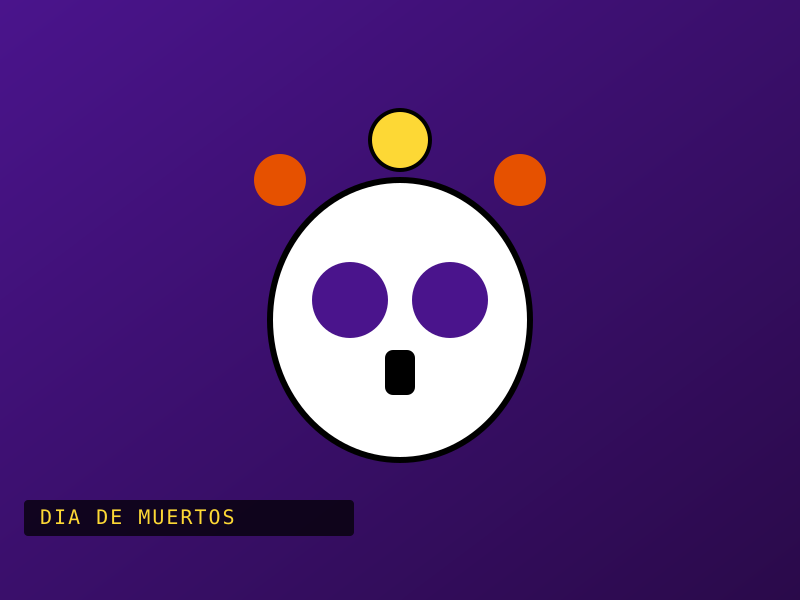
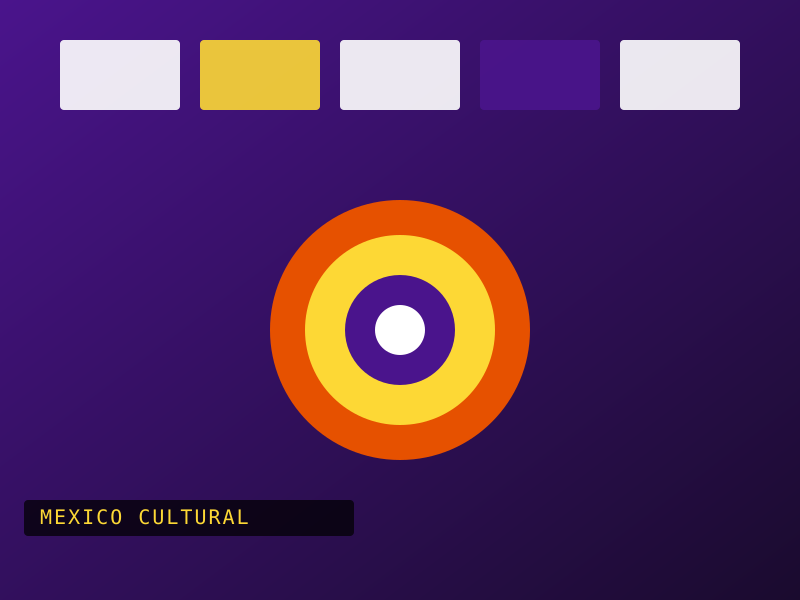
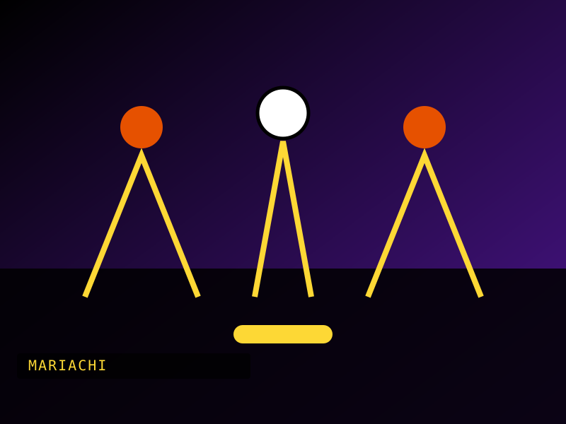
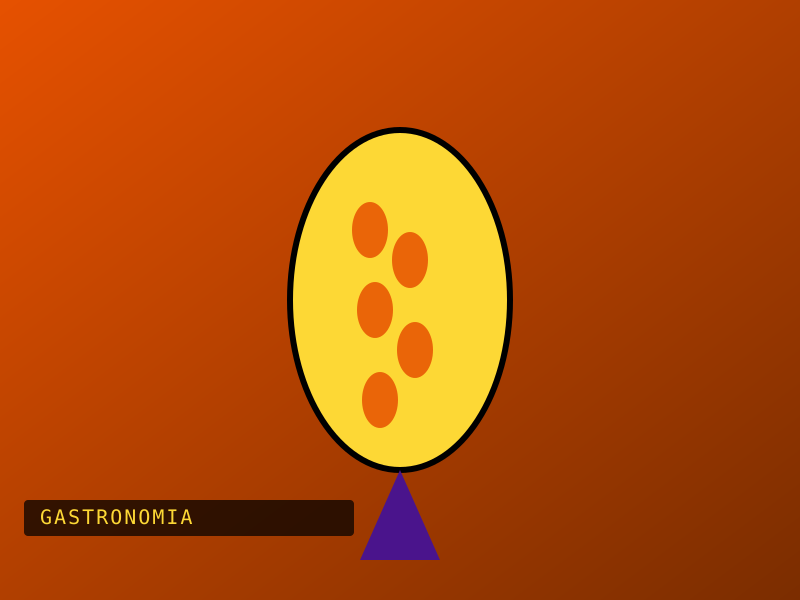

Day of the Dead
A celebration full of memory, color and symbols honoring those who are gone.
Read more[ Cultural archive / 001 ]
A journey through the stories, sounds and flavors that keep alive the identity of a diverse country.
Explore Traditions
03 stories to start

A celebration full of memory, color and symbols honoring those who are gone.
Read more
The sound of Mexico: tradition, emotion and gatherings told through song.
Read more
Regional flavors, inherited recipes and a table that gathers the whole community.
Read more